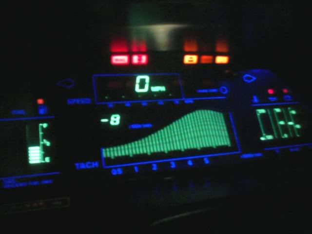

-
[QUOTE=Basically i just want my old z to haave the newer touch.
Thats exactly why i want to put the digi dash in. I know its a stock part but to me it really modernizes the interior.
EDIT: i have no idea how to do the quote thing lol -
While what you are doing really does sound cool. (Do you have a build thread or a thread about it someplace?) I do not understand the reasoning behind buying a 80's car and attempting to make it more modern. Don't misunderstand me, Led's, HID's, suspension mods, et, all. vastly improves the safety and daily livability of the vehicle but it kind of ruins the 80's feel of the vehicle. Having lived through the 80's I like my car as the retro beast that it is. If I wanted a modern car I would have one, (and I do.) And to be sure this stays on topic. The Digi dash is positively one of the features on my car I would Never swap out for the analog. When cruising at night the "light show" and the reflection off of the inside of the t tops never fails to impress a first time passenger.mizagyu;349218 wrote: Im working with dakota digital to create a more elegant dash for my z lol. all i had to do is send in my old digi and the pinout, they are taking care of the rest for about 1500.. comes with new sensors and wires, almost bolt in too.
I love the digi dash, but wanted something less retro. I made my digi white for a while, then pinkish red… then my z blew lol. So now im making a newer old z. led rears, led side markers, hids, new style digi, soundproofing.. (sorry to thread jack, just my .02)
Basically i just want my old z to have the newer touch.Black 1985 na/coupe brought back from the dead.
2000 frontier for work.
2004 PT Cruiser for gettin' grocery's. -
I might be starting a build thread soon. i tried converting one of my older threads to start my build thread. especially after i blew my vg to hell and back lol.Dave-D;349239 wrote: While what you are doing really does sound cool. (Do you have a build thread or a thread about it someplace?) I do not understand the reasoning behind buying a 80's car and attempting to make it more modern. Don't misunderstand me, Led's, HID's, suspension mods, et, all. vastly improves the safety and daily livability of the vehicle but it kind of ruins the 80's feel of the vehicle. Having lived through the 80's I like my car as the retro beast that it is. If I wanted a modern car I would have one, (and I do.) And to be sure this stays on topic. The Digi dash is positively one of the features on my car I would Never swap out for the analog. When cruising at night the "light show" and the reflection off of the inside of the t tops never fails to impress a first time passenger.
I love the old look and feel of the z, but i want some new eye candy, yknow? lol. plus, with how safe the z31 was, combined with newer suspension + sound dampening = a darn nice ride.
I know what you mean by the retro thing. there is a very fine line between updated and ricey, so sometimes retro/classy is better.
--------------------
Actually though, for the OP, the new dash i bought is wired for analog so i will be doing a anaglog to digi conversion to test everything before getting the new digi, if you need any help with wiring, lemme know.
Project Black Betty

-
another reason.. well…0-180 kmh meter doesn't fits z=)jaqattack02;349219 wrote: The tach on my digital seems to respond better than my old analog one, none of the other functions really require a fast response. I also agree with the others, the digital is just cool. -
Yeah that would be great if you could do a write up or thread showing it. Id really appreciate it -
I successfully converted my 86 turbo to digital from analog last year. A lot of work but like the op love the digital and maybe I just got lucky but everything works! digital dash, auto ac climate and even gll radio with steering wheel switches 100% functional -
I love the digital dash in my 86! 80's retro awesomeness that I would never trade for an analog! Everything works perfect on my, well except the RPM single digit LED isn't perfect. Response time is fine for me, if I am getting on it I'm not exactly staring at the dash anyway, I go by sound. And the speedo is great in the perfect position, hell way easier to read at night than a gauge IMHO.1986 300zx turbo, 5-speed, T-Top 2 seater
-
That's why I almost always have more than one Z. The Shiro is analog and the 86T is digital.
1988 300ZX Turbo, Shiro Special #760
1988 300ZX Turbo Automatic (wife's car)
1991 Hard-body 2WD
http://zccw.org/zccw/?page_id=1215 -
80's digital dash all the way. Unique and retro coolness factor through the roof!

-
I really want to see someone convert analog to digi. I've really wanted to do it, but it seems way too hard and risky for me.. Which is why I wish I hadn't bought a base model. But if someone can do it on this thread or something, I'd really be tempted to buy a digi dash and convert! Digi dashes are the coolest thing.Here's a question I have though: If newer race cars have digital dashes to reduce weight and what not, why can't someone modify a digi dash to be very accurate and reliable? I know it's a noob question but… -
I did convert my 86 Turbo GL Automatic from Analog to Digital last year
I started to post a write up but really only got as far as providing all the part numbers I required
I converted from the GL analog dash to the Digital Dash as well as from the Manual Climate to Automatic Climate control and from GL radio to GLL radio as well as Clothe seats to the GLL leather seats
It was a lot of work and a lot of parts required but it is possible to do -
I had a 87 with analog and it was ok but now I have one with digi dash and to be honest I love it I may even go as far as saying I do not think I would buy another z unless it was digi. I was born in 90 and I have no attachment to the 80s it is just that the digi is cool and makes driving the car more engaging. I hope you have success with your swap and get to enjoy driving g with the digi dash

Copyright © 2006–. All rights reserved. Privacy Policy